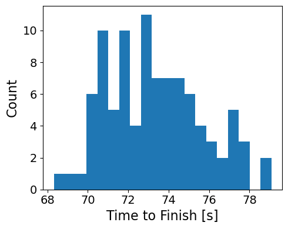
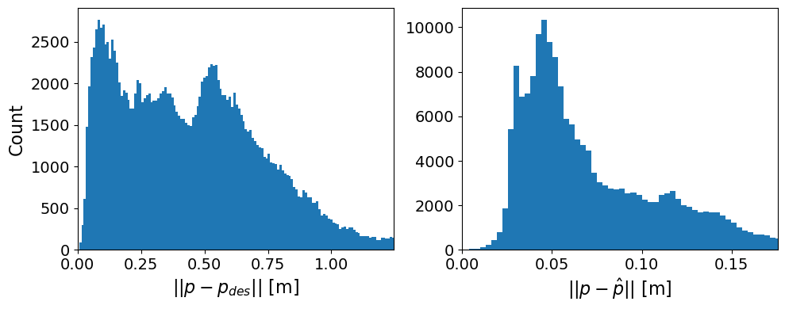
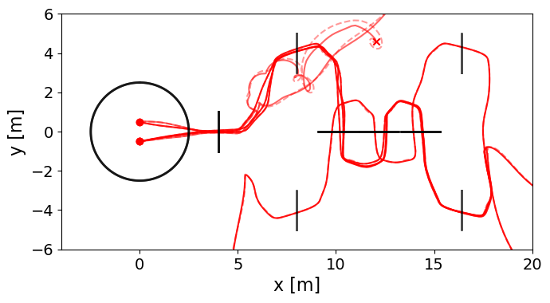

05 / Autonomous flight control / Evaluated in PyBullet simulation
AE353 DP4 · Maxwell Lutter & Landon Lopez
Guiding a drone through an obstacle course with LQR control and collision avoidance
With Landon Lopez, developed a controller and observer that guided a simulated quadrotor through a three-dimensional course of checkpoint rings and obstacles. I was the primary developer of the final drone code and contributed to model linearization, control and observer gains, navigation strategy, automated trials, figures, and the report.
- My contribution
- Primary developer of the final drone code; collaborative modeling, gain selection, navigation strategy, trial automation, and report work
- Tools
- LQR · State estimation · Collision avoidance · PyBullet · Python
- Outcome
- 95/100 course completions; 73.35 s mean among successful runs

Control and estimation around hover
The team linearized the quadrotor dynamics and sensor model about level hover. The design uses twelve states, four control inputs, and noisy position measurements from the front and back rotor locations.
Controllability and observability checks supported an LQR feedback controller and a dual-LQR observer. The observer updates a state estimate from the measurements, and feedback uses the difference between that estimate and the moving reference.
Guide the drone through the course
The guidance logic moves a reference toward successive checkpoint rings. The retained controller tracks near and far approach points, records ring geometry, and limits reference motion as the drone approaches the next crossing.
Attractive guidance toward the goal is combined with repulsive terms for nearby obstacles, other drones, and ring edges. These navigation decisions connect the local hover controller to a course-level task.
Evaluate completion and speed
95 of 100 trials completed the course; successful runs averaged 73.35 s.
The report evaluates two requirements: at least 80% course completion and a mean successful completion time below 80 s. The saved notebook output agrees with the reported 95% completion rate and 73.35 s mean, with successful times spanning 68.36–79.12 s.
Position tracking and estimation errors were logged over the simulation time steps. The two distributions below measure position-error norms in meters; the report uses the saved results to discuss observer behavior during navigation.


Investigate the remaining failures
Five trials did not complete the course. The report places the failure trajectories near the obstacle region and associates large departures with close approaches, collisions, and difficulty stabilizing after those encounters.
The proposed improvements were further tuning of control and observer weights, smoother reference motion, and better clearance near ring edges. The results document a successful simulated course study while retaining the observed failure cases.


Contribution and archived source
The report credits my work on linearization, navigation strategy, controller and observer gains, repeated-trial data collection, figures, and report revisions, and identifies me as the primary developer of the final drone code. Landon contributed controller implementation, obstacle avoidance, experimental-method writing, and analysis and conclusions.
The public source includes the notebook whose saved results match the report, a readable Python export, and the related mlutter2.py controller file. These are preserved development versions with setup and attribution notes. No new numerical study was run for the portfolio.